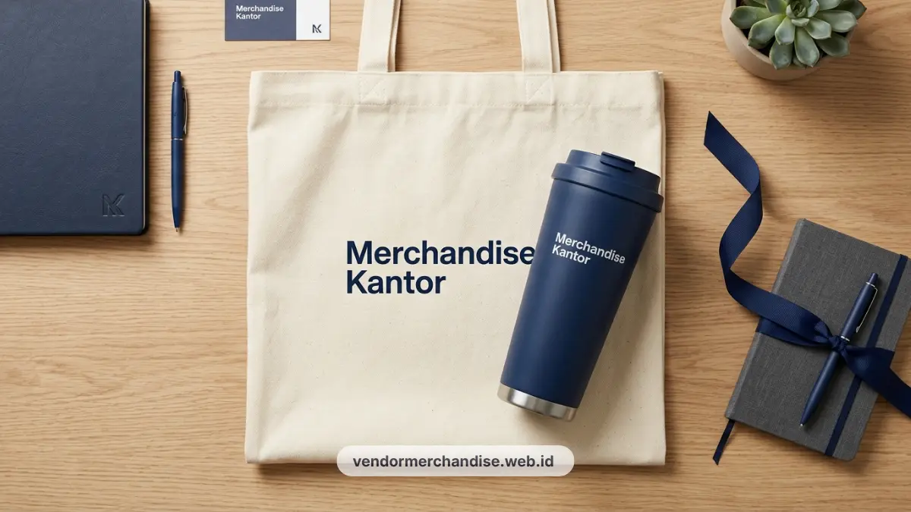

Sebagai penyedia merchandise kantor, kami melayani pemesanan seminar kit untuk berbagai skala acara korporat, mulai dari workshop internal hingga seminar nasional dengan ratusan peserta.
Melayani pemesanan souvenir di Jakarta dengan sistem produksi yang dirancang mengikuti tenggat waktu acara, sehingga tim procurement tidak perlu khawatir soal keterlambatan pengiriman. Penyiapan souvenir seminar ini melengkapi layanan paket merchandise kantor eksklusif klien korporat Jakarta yang sudah banyak dipercaya perusahaan nasional.
Kombinasi Produk Seminar Kit yang Paling Diminati
Kombinasi notebook, pulpen, dan tumbler custom logo tetap menjadi pilihan utama karena fungsional dan mudah digunakan peserta setelah acara selesai.
Kombinasi ini biasa disusun dalam beberapa varian sesuai anggaran dan jenis acara:
- Notebook dan pulpen custom logo: Cocok untuk seminar edukatif atau pelatihan yang membutuhkan alat tulis fungsional. Bahan notebook bisa disesuaikan mulai dari hardcover sederhana hingga bahan premium dengan finishing emboss logo perusahaan, sejalan dengan standar notes dan pulpen custom logo.
- Tumbler custom logo: Menjadi favorit karena daya pakai jangka panjang. Peserta cenderung membawa tumbler ke kantor atau rumah, sehingga brand perusahaan penyelenggara tetap terlihat lama setelah acara berakhir.
- Tote bag dan lanyard: Berfungsi sebagai wadah seminar kit sekaligus identitas peserta selama acara berlangsung. Koleksi tote bag kanvas custom logo dan lanyard ID card custom logo perusahaan Jakarta memberikan kesan sangat rapi saat dibagikan di meja registrasi.
- Paket kombinasi lengkap: Menggabungkan notebook, tumbler, tote bag, dan lanyard dalam satu paket welcome kit peserta, biasanya dipilih untuk seminar berskala menengah hingga besar dengan anggaran per peserta yang sudah ditentukan panitia. Paket ini selaras dengan konsep seminar kit lengkap untuk acara perusahaan.
Menentukan Skala Peserta dan Anggaran Seminar Kit
Skala peserta seminar menentukan jumlah unit produksi dan jenis packaging yang paling efisien untuk digunakan panitia acara.
Untuk seminar dengan lima puluh sampai seratus peserta, kombinasi produk cenderung lebih fleksibel karena volume produksi kecil. Panitia bisa memilih bahan yang lebih personal seperti notebook dengan nama peserta atau tumbler dengan warna berbeda per divisi.
Untuk seminar dengan seratus sampai lima ratus peserta, efisiensi produksi menjadi prioritas. Kombinasi produk biasanya distandarkan dalam satu desain dan satu warna dasar agar proses produksi massal berjalan lebih cepat dan biaya per unit lebih terkendali.
Anggaran per peserta juga memengaruhi pilihan material. Anggaran terbatas biasanya mengarah pada kombinasi notebook dan pulpen standar, sementara anggaran menengah ke atas memungkinkan penambahan tumbler atau tote bag kanvas sebagai pelengkap paket. Opsi berbasis eco-friendly seperti pada paket seminar kit ramah lingkungan juga bisa dijadikan pilihan bijak.

Estimasi Waktu Produksi dan Pengiriman untuk Wilayah Jakarta
Waktu produksi seminar kit custom logo di Jakarta umumnya berkisar tujuh sampai empat belas hari kerja tergantung kuantitas dan tingkat kerumitan desain.
Proses ini mencakup tahap desain awal, approval logo dan warna, produksi massal, quality control, hingga packaging akhir. Semakin besar jumlah pesanan, semakin penting mengajukan pesanan lebih awal sebelum tanggal acara.
Pesan dari Jakarta memungkinkan pengiriman lebih cepat ke lokasi acara di area Jabodetabek, terutama untuk kebutuhan mendesak seperti seminar dengan waktu persiapan singkat. Anda juga dapat melengkapi acara dengan souvenir teknologi kantor flashdisk powerbank custom logo Jakarta.
Koordinasi jadwal produksi dan pengiriman sebaiknya dilakukan minimal dua sampai tiga minggu sebelum hari pelaksanaan agar tidak terburu-buru pada tahap finishing.
Kombinasi Warna dan Branding pada Seminar Kit Korporat
Warna dan elemen branding pada seminar kit sebaiknya konsisten dengan identitas visual perusahaan penyelenggara agar kesan profesional tetap terjaga di mata peserta.
Logo perusahaan biasanya ditempatkan pada bagian depan notebook, badan tumbler, dan permukaan tote bag agar mudah terlihat saat dibawa peserta. Pemilihan warna dasar seperti navy, abu-abu, atau putih sering dipilih karena terkesan formal dan mudah dipadukan dengan berbagai tema acara korporat. Opsi cetak logo yang rapi bisa dikonsultasikan di katalog layanan custom logo Merchandise Kantor.
Kombinasi warna aksen dapat disesuaikan dengan tema seminar, misalnya warna hijau untuk seminar bertema keberlanjutan atau warna emas untuk acara penghargaan tahunan perusahaan.
Studi Kasus Penggunaan Seminar Kit pada Acara Korporat
Contoh penggunaan seminar kit di lapangan membantu panitia memahami kombinasi produk yang paling sesuai dengan jenis acara yang diselenggarakan.
Pada seminar pelatihan internal berskala seratus peserta, kombinasi notebook dan pulpen custom logo sering dipilih karena fokus acara pada aspek pembelajaran dan pencatatan materi.
Pada seminar nasional dengan tamu eksternal, kombinasi lengkap notebook, tumbler, tote bag, dan lanyard lebih umum digunakan karena berfungsi juga sebagai identitas visual peserta selama acara berlangsung.
Pada acara peluncuran produk atau seminar bertema korporat besar, seminar kit sering dilengkapi dengan kemasan khusus dan finishing premium seperti tea set perusahaan custom logo ruang meeting Jakarta untuk memberikan kesan lebih eksklusif kepada tamu undangan dan narasumber.

Konsultasi Kombinasi Seminar Kit Sesuai Kebutuhan Acara Anda
Merchandise Kantor siap membantu tim procurement dan panitia acara menyusun kombinasi seminar kit yang sesuai dengan jumlah peserta, anggaran, dan tema acara korporat Anda.
Konsultasikan kebutuhan seminar kit Anda sekarang melalui tim kami melalui WhatsApp resmi kami atau halaman kontak kami untuk mendapatkan rekomendasi kombinasi produk, estimasi biaya, dan jadwal produksi yang paling sesuai dengan tanggal acara Anda.